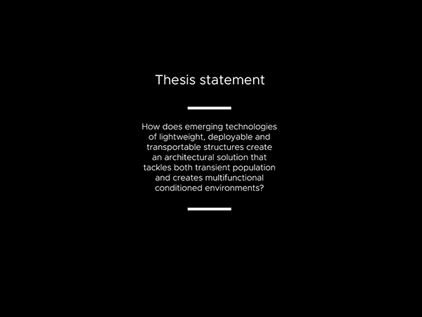
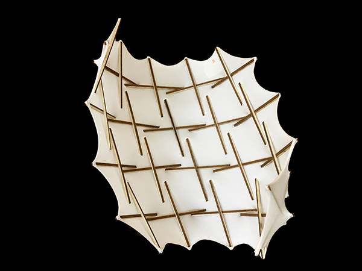
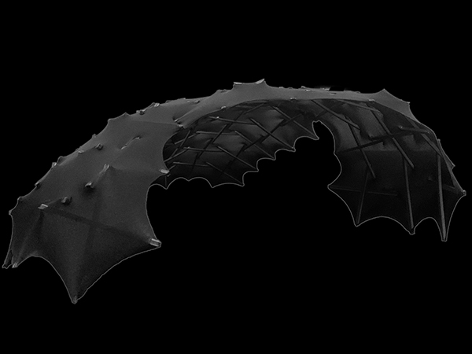
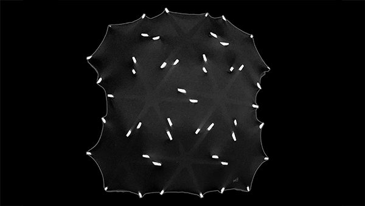
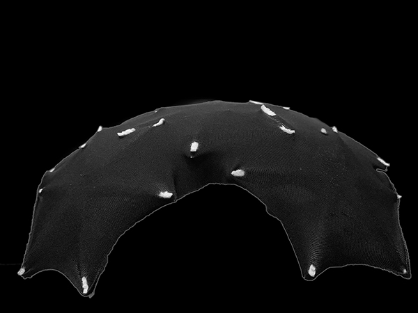

Deployable Enclosures
Summary
This thesis seeks to explore the idea of non-conventional building structures which are not meant for permanence or finality but rather can be easily constructed and disassembled to provide shelter and comfort. Transformable and deployable structures whose effectiveness is predicated on their adaptability to external conditions, characterized by compactness, transformability, lightness, rapid assembly and disassembly, material reuse and ease of transportation. Such structures have been utilised by designers for outer-space applications, disaster relief housing, moving theatres and military installations that can be rapidly assembled. Deployable structures refer to the transformation of a structure from a compact closed configuration to a relatively large open configuration that solves different problems relating to geometry, mechanics and structure. Focusing on a particular branch of such structures and taking a closer look at membrane tensegrity structures, where the membrane and struts are both self-supporting, contributing to the inherent structure. The elongation of the struts results in compression and the membrane stretches to cater to the tension, creating a load transfer between the struts and membrane. A mechanised version of deployment is studied to enable the user to easily deploy the structure.Name
Tan Zhi Wei
Mentor
Kenneth Tracy
Typology
Shelter, Deployable, Lightweight

![]()
![]()
![]()
![]()
Inspiration
The Dome over Manhattan by Buckminster Fuller is where he radically proposes to envelop midtown Manhattan under a 3km dome and argues that the dome has the ability to reduce heat losses in New York by 80 times and about 20 percent of the amount of energy input compared to without it. This signals a radical yet attainable shift in our mode of interaction with our environment where it asserts our ability to safely create and manage the complexity of climate systems. The dome seeks to envelope and enclose, to provide shelter and to create a controlled environment.Worldwide population growth
The world’s population has been constantly on the rise throughout developed and developing countries. This chart above shows the rapid increase in population from 1820 to 2019, and in just a short span of 200 years, the world population has increased from 1 billion to about 7 billion and is expected to increase to 9.7 billion by 2050. With more people living in the same amount of land space in the world, this undoubtedly results in a denser population, creating a multitude of problems for cities such as overcrowding and lack of space for everyone.Worldwide population movement
This image on the right shows the global movement footprint across the world, and the interconnectedness between countries due to globalisation. People move from place to place for various push and pull reasons.

Worldwide population movement
The reasons for movement that have sparked massive migration of people across countries are economic opportunities, climate change and war and conflict. People are enticed to move and immigrate to other countries for better opportunities, in order to make a life in the new country or remit money back to their families back home. Forecasts by the UN International Organization for Migration posit that there could be between 25 million to 1 billion environmental migrants by 2050, moving either within their countries or across borders, finding temporary and permanent homes. Instances of people groups facing war and conflict are highly motivated to flee the country in search for safety.Thesis proposal
The question arises when the increase in population numbers due to either natural factors or mass migrations becomes much more than the availability of multifunctional conditional environments? I propose to take a look at deployable structures to fill this gap in terms of creating shelters and enclosures that can serve a multitude of functions, helping to alleviate the stresses that population growth and land scarcity places on cities in the near future.Physical model process
The physical models were constructed to test if the translation from the digital to physical was accurate at smaller scales. This would allow for refinement of the digital simulation to aptly reflect the physical constraints of the fabric material used. The process was to simulate a strut pattern digitally, creating a template to cut the fabric and using wooden struts to construct the physical model.Strut pattern parameters
In trying to understand the different strut patterns, 4 parameters were tested – horizontal separation, horizontal offset, vertical separation and vertical offset, these parameters affect the strut patterning and interactions between the strut and fabric.Cross strut patterns
A total of six patterns were explored, starting with various arbitrary numbers to gain an understanding of the membrane tensegrity system, thereafter refining the values to achieve other forms.Struts iterations
There were a total of six different strut iterations explored with varying lengths and heights, that determines how much the fabric is stretched compared to the initial unstretched length.


Digital simulation, Pattern A


Digital simulation, Pattern B


Pattern A, Strut 1


Pattern A, Strut 2


Pattern A, Strut 3


Pattern B, Strut 5


Pattern C, Strut 2


Pattern D, Strut 4

Pattern E, Strut 5
Pattern E, Strut 6
Pattern F, Strut 5

Physical models matrix
This matrix shows the side profile of the physical models with different patterns and struts.Physical prototype gif
The gif in the center shows that the physical prototype is able to have an energy that is released by the flattened strut pattern that results in a 3D form. This form is dependent on the strut patterns and the parameters set, strut lengths and the properties of the fabric.Cross strut iterations
The previous iterations were highly deterministic as the strut patterns were already biased in a single direction as it was a 4 by 5 pattern, hence the models made tended to conform to a predefined shape. This final cross pattern allowed more uniformity and was less deterministic in nature.Fixing anchor points
This uniform shape was able to conform to various shapes based on pinning and choosing different anchor points, allowing for a high degree of versatility. By pinning 3 selected anchor points, a canopy like form was created, 4 anchor points were chosen instead of 3, creating a tunnel like form.The following iterations show how a model with more struts but with the same pattern can have more flexibility in conforming to various forms by either stretching one end further or by focusing the weight of the fabric on other anchor points.
Pattern G, Strut 5
Pattern G, Strut 5

Pattern G, Strut 5
Hexagonal strut patterns
The various hexagonal strut patterns were initially based on Pattern A where the same pattern was explored with varying the parameters between each strut. The parameters explored identified the optimum distance between each strut that prevents overstretching while enabling the fabric to be stretched to a substantial amount for the form to emerge.Struts iterations
There were two different hexagonal struts that were explored with flat and curved profiles. The flat struts would stretch the fabric to the desired amount, whereas the curved profile would further stretch whilst pulling the fabric together, from which the further physical model studies show that the curved struts often created a more smooth form compared to the flat struts.
Pattern A parameter iterations study, Strut 1
Pattern A, Strut 1
Pattern A, Strut 2

Pattern B, Strut 1

Pattern B, Strut 2
Pattern C, Strut 1
Pattern D, Strut 1

Forces deflection
When the fabric is stretched, the main forces come from the main axial directions. Apart from that, the fabric also causes the strut to deflect in the eccentric direction, causing the strut to either shift from its intended position or bend. The material and rigidity of the strut needs to be further studied to reduce the strain on the struts in the eccentric directions.Digital simulation 1
This digital simulation shows how the membrane is stretched as the struts elongate together. The struts are lengthened at the same time to provide the force needed for the membrane to pop up.Digital simulation 2
However for practical construction there needs to be a sequential construction and elongation of the struts as they rotate about the pivot. This digital simulation shows how the membrane could pop up if the struts were elongated based on the sequence shown.Digital simulation 3
This digital simulation shows an alternate sequence of elongating the struts. With the digital tools different sequences can be studied to understand how the structure can be potentially popped up.Mechanism
The proposed mechanism for lengthing the struts is through a rotational pivot point, where after affixing the predeployed struts onto the fabric membrane, the struts would be finally lengthed to its final length by rotating the struts to reach the desired point, thus stretching the fabric to form its final shape.Initial prototyping
Prototypes of mechanism system were intially tested and refined to make the pivoting and movement smooth, it was then further tested on a larger model at 1:30 scale compared to the previous physical models which were at 1:60 scale.The video shows the working of the mechanism as it is deployed and consequently stretches the fabric to the required length.

Final Mechanism
The final mechanism consists of a centrepiece, pivot point, spring loaded trigger pull to lock the rotated strut in place when fully deployed, fabric snap together with the moving part attached with wires and hook that is utilised to create the rotational strut movement.